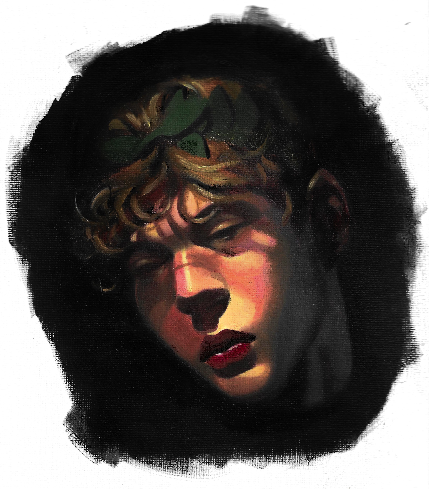
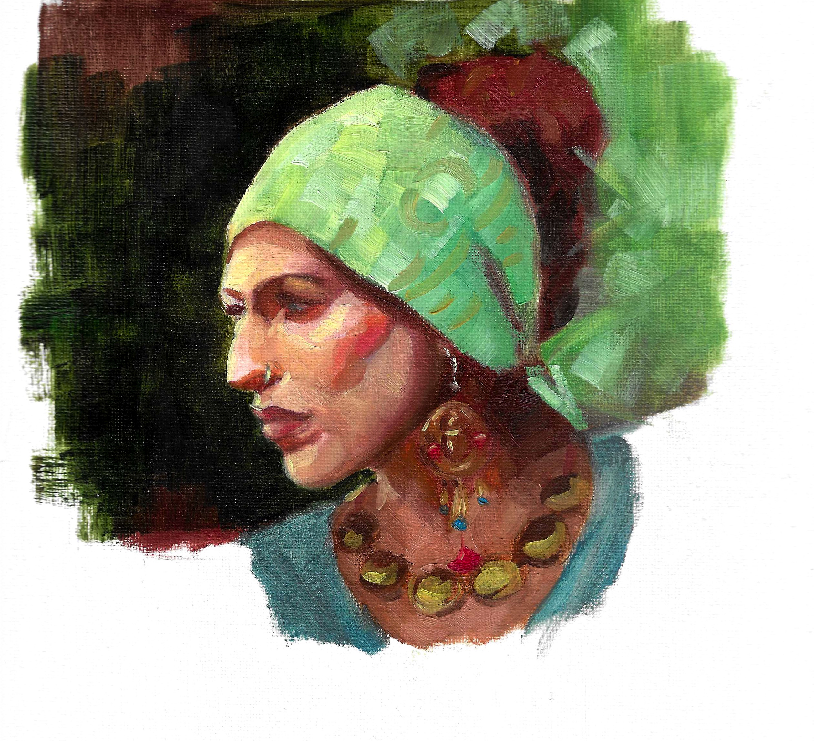
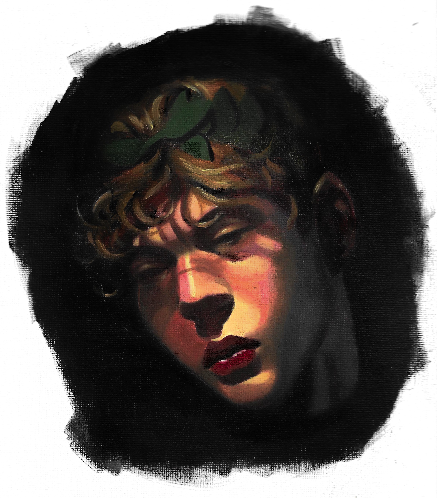
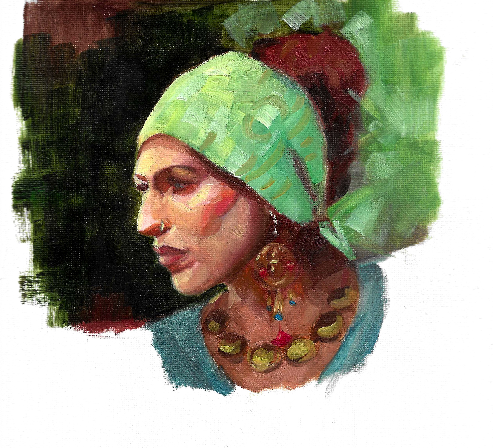

These oil paintings were done using various palettes arrangments,
one was done using what is called the Zorn Palette, The other one using Warm and Cool Palette and the last one using an open palette.
My inspirations in oil painting include: my teacher Meadow Gist, Jeff Watts and John Sargent.